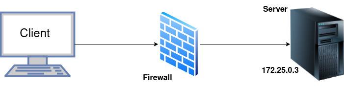

Administració senzilla de regles d'iptables fent servir Docker
Introducció
Per a simplificar la infraestructra necessària per a esta pràctica, farem servir un framework anomenat Labtainer. Este framework es capaç de crear diferents laboratoris o escenaris basats en contenidors de Docker.
En concret, el nostre escenari serà tal que així:

Labtainer
Descarregueu la imatge .ova del link que teniu a Aules i importeu-la en Virtualbox.
Per tal d'iniciar el laboratori, no tanqueu el terminal s'obrirà automàticament i introudiu:
I començaran a desplegar-se els contenidors i se vos obriràn dues pestanyes en el terminal del firewall.
Nota
Quan vos pregunte per l'email, deixeu-lo en blanc i dieu-li que esteu segurs de deixar-lo en blanc (y)
Per a accedir al terminal de qualsevol contenidor podeu fer servir:
Tasques
Des del client prova a fer un escaneig de ports al server i comenta el resultats:
Prova a accedir per SSH:
I confirma que s'oferix el servici de Telnet:
Al contenidor firewall està instal·lat Iptables. Fes-lo servir per a permetre únicament la redirecció (forwarding) de tràfic SSH i HTTP. Per tal d'ajudar-te, pots experimentar amb el script example fw.sh.
Atenció
Considera posar les teues regles d'iptables en un script per tal de poder aplicar-les ràpidament sempre que ho necessites.
Comprova els packets descartats (drop) mirant el logs i assenyalant clarament dins del log on es produeix el drop:
El contenidor firewall també té instal·lada l'aplicació wireshark, fes-la servir per a vore els drops també:
Una vegada has limitat el tràfic amb iptables, torna a fer el escaneig de ports per a comprovar que la nova situació és correcta.
Obrir un port per a un nou servici
El contenidor del client inclou un programa anomenat wizbang. Executa este script i comprova quin és el port que està intentant utilitzar per a enviar el tràfic.
Una vegada comprovat, introdueix una regla que permeta este tràfic i comprova que funciona correctament (de les dues formes comentades a clase).
Fes també la comprovació amb un nou escaneig de ports.
Una vegada heu acabat, pareu el laboratori al terminal original amb: